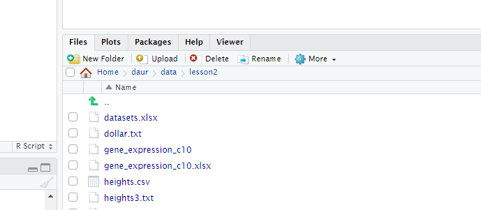
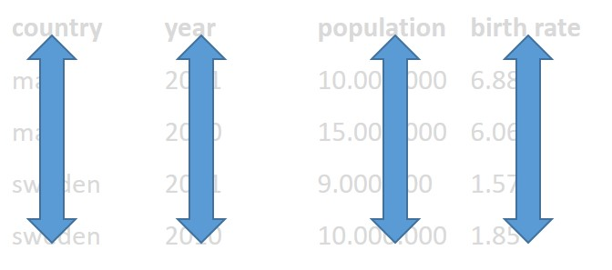
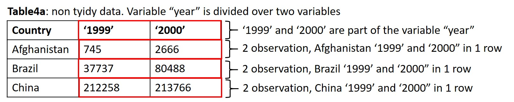
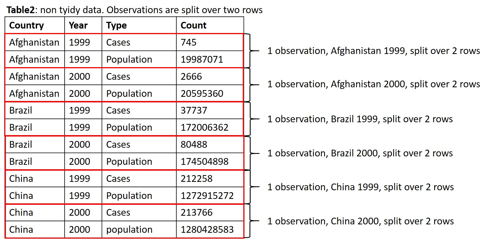
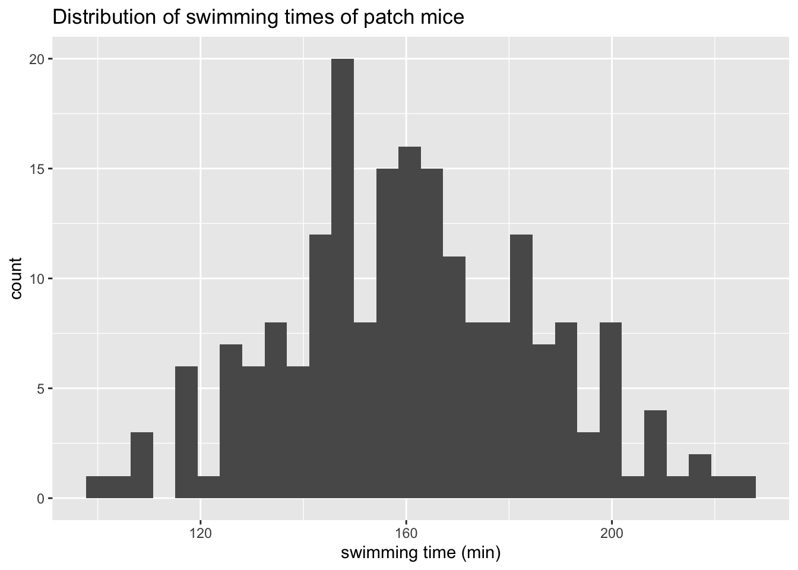
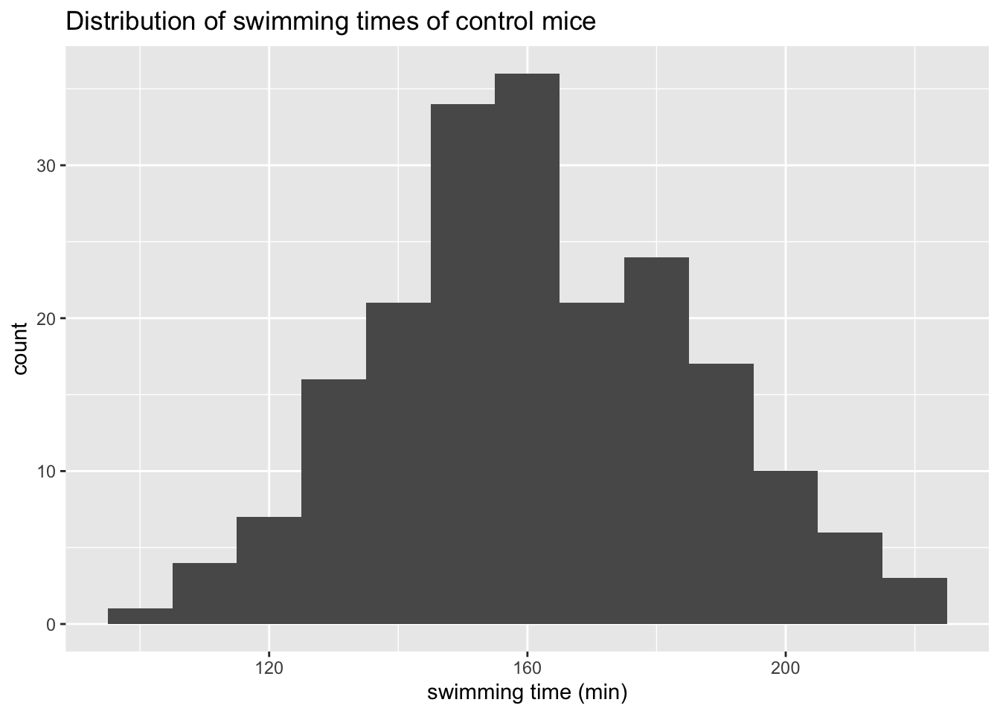
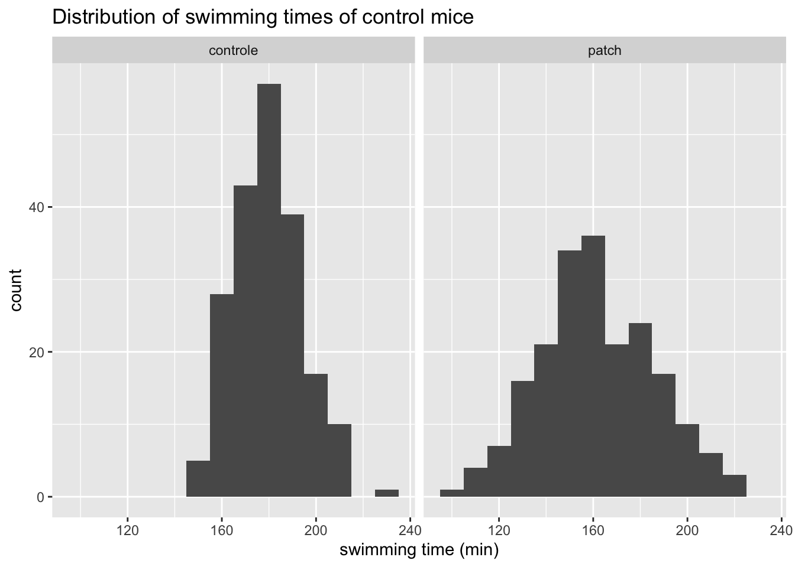

Lesson 3 - Importing data & tidy data

Learning objectives
After this lesson:
- You can import data into the R environment
- You know how to inspect your data
- You can make your data “tidy”
Importing text files
So far, we have worked with built-in datasets. In real life you will generate data yourself or you will obtain data from other researchers or public sources such as NCBI.
To start working with your own datasets, data needs to be read by R and stored as R objects. We can use a variety of read_function() from the the tidyverse packages to import plain text datafiles as tibbles (sort of like a data table). These functions work the same. If you have mastered one you can use the other functions in a similar way:
read_csv() ## comma separated values
read_csv2() ## semicolon separated values
read_tsv() ## tab separated values
read_delim() ## custom defined delimiter, for example:
read_delim("voorbeeld.csv", delim="&")
read_fwf() ## fixed width fields
read_table() ## white space separated separators
Before choosing the right read_function() you need to know how the values of your dataset are separated.
You can view files by clicking on them in the files tab (lower right corner of the screen).

Navigate to the folder data/lesson3.
try clicking on a few txt files and inspect what they look like.
click on heights.csv, select view
Values of the heights.csv file are separated by comma’s. Even though the filename ends on csv (comma separated values) always inspect the contents of a datafile before loading it into R!
We can use the read_csv() function:
Example
library(tidyverse)
heights <- read_csv("data/lesson3/heights.csv")## Rows: 1192 Columns: 6
## ── Column specification ──────────────────────────────────────────────────────────────────────────────────
## Delimiter: ","
## chr (2): sex, race
## dbl (4): earn, height, ed, age
##
## ℹ Use `spec()` to retrieve the full column specification for this data.
## ℹ Specify the column types or set `show_col_types = FALSE` to quiet this message.you can view the data by typing the object name in the console (or in a script and run that line):
heightsR assumes the decimal separator is a “point”. If your datafile has a comma as a decimal separator (most european datafiles) you have to tell the read_function() this!
We will use a datafile which is present in the server folder data/lesson3 named heights3.txt. Inspect the datafile heights3.txt. As you can see, the values are tab separated and the decimal separator is a comma.
We will first use the read_tsv() function with default settings:
Example
heights_3 <- read_tsv("data/lesson3/heights3.txt")## Rows: 1192 Columns: 6
## ── Column specification ──────────────────────────────────────────────────────────────────────────────────
## Delimiter: "\t"
## chr (2): sex, race
## dbl (3): earn, ed, age
##
## ℹ Use `spec()` to retrieve the full column specification for this data.
## ℹ Specify the column types or set `show_col_types = FALSE` to quiet this message.heights_3## # A tibble: 1,192 × 6
## earn height sex ed age race
## <dbl> <dbl> <chr> <dbl> <dbl> <chr>
## 1 50000 7.44e14 male 16 45 white
## 2 60000 6.55e14 female 16 58 white
## 3 30000 6.36e14 female 16 29 white
## 4 50000 6.31e14 female 16 91 other
## 5 51000 6.34e14 female 17 39 white
## 6 9000 6.44e14 female 15 26 white
## 7 29000 6.17e14 female 12 49 white
## 8 32000 7.27e14 male 17 46 white
## 9 2000 7.20e14 male 15 21 hispanic
## 10 27000 7.22e14 male 12 26 white
## # … with 1,182 more rowsThe values of variable height are not shown correctly:
- row1 original value = 74,4244387818035.
- row1 converted value = 7.44e14
We have to instruct read_tsv() that the comma acts a decimal separator by using the locale argument in combination with the locale() function:
Example
heights_3 <- read_tsv("data/lesson3/heights3.txt",
locale = locale(decimal_mark = ","))## Rows: 1192 Columns: 6
## ── Column specification ──────────────────────────────────────────────────────────────────────────────────
## Delimiter: "\t"
## chr (2): sex, race
## dbl (4): earn, height, ed, age
##
## ℹ Use `spec()` to retrieve the full column specification for this data.
## ℹ Specify the column types or set `show_col_types = FALSE` to quiet this message.heights_3## # A tibble: 1,192 × 6
## earn height sex ed age race
## <dbl> <dbl> <chr> <dbl> <dbl> <chr>
## 1 50000 74.4 male 16 45 white
## 2 60000 65.5 female 16 58 white
## 3 30000 63.6 female 16 29 white
## 4 50000 63.1 female 16 91 other
## 5 51000 63.4 female 17 39 white
## 6 9000 64.4 female 15 26 white
## 7 29000 61.7 female 12 49 white
## 8 32000 72.7 male 17 46 white
## 9 2000 72.0 male 15 21 hispanic
## 10 27000 72.2 male 12 26 white
## # … with 1,182 more rowsNow the values of the height variable are read in correctly.
extracting numbers
The read_function() (in this case read_tsv) guesses the datatype of each column and tries to read and convert the data in the right format. A problem you might encounter are numbers surrounded by non-numerical characters such as % of currency characters. For example $1,23 or 31%. To extract only the number we can use two options:
- The function
parse_number() - The argument col_types in combination with the
function cols().
To demonstrate number extraction out of a character value we will use file dollar.txt in the server folder data/lesson3
Example
dollar <- read_tsv("data/lesson3/dollar.txt")## Rows: 5 Columns: 2
## ── Column specification ──────────────────────────────────────────────────────────────────────────────────
## Delimiter: "\t"
## chr (1): amount
## dbl (1): person
##
## ℹ Use `spec()` to retrieve the full column specification for this data.
## ℹ Specify the column types or set `show_col_types = FALSE` to quiet this message.dollar # variable amount is of data type character (chr)## # A tibble: 5 × 2
## person amount
## <dbl> <chr>
## 1 1 $100
## 2 2 $200
## 3 3 $300
## 4 4 $400
## 5 5 $500parse_number(dollar$amount[1]) # parse_number() extracts numeric value out of $100 ## [1] 100dollar$amount <- parse_number(dollar$amount) # replace all character strings for numeric values of the variable "amount"
dollar # check that numeric values are extracted and returned ## # A tibble: 5 × 2
## person amount
## <dbl> <dbl>
## 1 1 100
## 2 2 200
## 3 3 300
## 4 4 400
## 5 5 500The alternative solution is to use the read_function() and change the col_types argument. The col_types argument is used in combination with the col() and the col_number() function (of which the latter is equivalent to the parse_number() function). The col() function is used to select all variables and the col_number() function is used to select a specific variable (in this case “amount”) to extract the number out of a character vector.
Example
dollar_2 <- read_tsv("data/lesson3/dollar.txt", col_types = cols(amount = col_number()))
dollar_2 # numeric values are extracted and returned . Data type is double (dbl)## # A tibble: 5 × 2
## person amount
## <dbl> <dbl>
## 1 1 100
## 2 2 200
## 3 3 300
## 4 4 400
## 5 5 500Exercise 3
Import data datafile heights4.txt in server folder data/lesson3 into R.
Click for the answer
heights4 <- read_delim("data/lesson3/heights4.txt", delim="@", locale = locale(decimal_mark = ","))## Rows: 1192 Columns: 6
## ── Column specification ──────────────────────────────────────────────────────────────────────────────────
## Delimiter: "@"
## chr (2): sex, race
## dbl (4): earn, height, ed, age
##
## ℹ Use `spec()` to retrieve the full column specification for this data.
## ℹ Specify the column types or set `show_col_types = FALSE` to quiet this message.heights4## # A tibble: 1,192 × 6
## earn height sex ed age race
## <dbl> <dbl> <chr> <dbl> <dbl> <chr>
## 1 50000 74.4 male 16 45 white
## 2 60000 65.5 female 16 58 white
## 3 30000 63.6 female 16 29 white
## 4 50000 63.1 female 16 91 other
## 5 51000 63.4 female 17 39 white
## 6 9000 64.4 female 15 26 white
## 7 29000 61.7 female 12 49 white
## 8 32000 72.7 male 17 46 white
## 9 2000 72.0 male 15 21 hispanic
## 10 27000 72.2 male 12 26 white
## # … with 1,182 more rowsExercise 3
Import data datafile salary.csv in server folder data/lesson3 into R.
Convert character vectors with numbers to numeric values only. The thousand separator is a dot !
Click for the answer
salary <- read_csv2("data/lesson3/salary.csv",
col_types = cols(Salary_2018 = col_number(),
Increase_in_salary_2018 = col_number()))## ℹ Using "','" as decimal and "'.'" as grouping mark. Use `read_delim()` for more control.salary## # A tibble: 10 × 4
## Employee Group Salary_2018 Increase_in_salary_2018
## <dbl> <dbl> <dbl> <dbl>
## 1 1 1 2000 0.02
## 2 2 1 2000 0.023
## 3 3 1 2000 0.016
## 4 4 1 2000 0.032
## 5 5 1 2000 0.0194
## 6 6 2 3000 0.032
## 7 7 2 3000 0.016
## 8 8 2 3000 0.0343
## 9 9 2 3000 0.024
## 10 10 2 3000 0.011Setting variable (column) names
By default read_function() uses the first line of a dataset as variable names (column names).
There are two situations where we have to change the behaviour of the read_function()
If a dataset doesn’t contain variable names (=column names) use the option col_names = FALSE.
The first line of the dataset will be ignored as variable names. The columns will be labelled automatically from X1 to Xn. If you want to manually add variable names you can provide a vector with the variable names tot the col_names option: col_names = c(“variable_name1”, “variable_name2”, “variable_name3”)
Download dataset heights1.csv and move the file to the server folder data/lesson3. To move files between the server and your computer:
Go to the server, select the folder you want to upload something to.
click on Upload

In the upload menu, click Choose File and select heights.csv where you just downloaded it.
inspect heights.csv
This file lacks variable names:
Example
heights_1 <- read_csv("data/lesson3/heights1.csv", col_names = FALSE) # first line will not be used as variable names head(heights_1)## # A tibble: 6 × 6
## X1 X2 X3 X4 X5 X6
## <dbl> <dbl> <chr> <dbl> <dbl> <chr>
## 1 50000 74.4 male 16 45 white
## 2 60000 65.5 female 16 58 white
## 3 30000 63.6 female 16 29 white
## 4 50000 63.1 female 16 91 other
## 5 51000 63.4 female 17 39 white
## 6 9000 64.4 female 15 26 whiteheights_1_1 <- read_csv("data/lesson3/heights1.csv", col_names = c("name1", "name2", "name3", "name4", "name5", "name6"))
# added custom variable names by providing a vector containing the names of the variables
# in this case: "name1, name2 name3 etc"head(heights_1_1)## # A tibble: 6 × 6
## name1 name2 name3 name4 name5 name6
## <dbl> <dbl> <chr> <dbl> <dbl> <chr>
## 1 50000 74.4 male 16 45 white
## 2 60000 65.5 female 16 58 white
## 3 30000 63.6 female 16 29 white
## 4 50000 63.1 female 16 91 other
## 5 51000 63.4 female 17 39 white
## 6 9000 64.4 female 15 26 whiteVariables names can always be modified by using:
- The function
colnames() - The function
rename()
Example
heights_1 <- read_csv("data/lesson3/heights1.csv", col_names = FALSE) colnames(heights_1)<- c("name1", "name2", "name3", "name4", "name5", "name6") # change all column names
colnames(heights_1)[3] <- "new_name3" # change the name of a specified column using an index
heights_1_1 <-rename(heights_1_1, new_name4 = name4) # change the name of a specified column using rename() (2) if variable names are present but not at the first line use te options skip=N or comment = “#”
Download dataset heights2.txt and move the file to the server folder data/lesson3. This file contains variable names but not at the first row. Note that the values are separated by tabs!
First we have to inspect the datafile: click on the file.
The first two lines are comments starting with the # sign. The variable names are present at row3. To read in the file we will use read_tsv()
Example
heights_2<-read_tsv("data/lesson3/heights2.txt", skip = 2) # first two rows are not imported in object heights_2heights_2## # A tibble: 1,192 × 6
## earn height sex ed age race
## <dbl> <dbl> <chr> <dbl> <dbl> <chr>
## 1 50000 74.4 male 16 45 white
## 2 60000 65.5 female 16 58 white
## 3 30000 63.6 female 16 29 white
## 4 50000 63.1 female 16 91 other
## 5 51000 63.4 female 17 39 white
## 6 9000 64.4 female 15 26 white
## 7 29000 61.7 female 12 49 white
## 8 32000 72.7 male 17 46 white
## 9 2000 72.0 male 15 21 hispanic
## 10 27000 72.2 male 12 26 white
## # … with 1,182 more rowsAlternatively we can use the comment = “#” option
Example
heights_2<-read_tsv("data/lesson3/heights2.txt", comment = "#") ## lines starting with a # sign are ignored for read inheights_2## # A tibble: 1,192 × 6
## earn height sex ed age race
## <dbl> <dbl> <chr> <dbl> <dbl> <chr>
## 1 50000 74.4 male 16 45 white
## 2 60000 65.5 female 16 58 white
## 3 30000 63.6 female 16 29 white
## 4 50000 63.1 female 16 91 other
## 5 51000 63.4 female 17 39 white
## 6 9000 64.4 female 15 26 white
## 7 29000 61.7 female 12 49 white
## 8 32000 72.7 male 17 46 white
## 9 2000 72.0 male 15 21 hispanic
## 10 27000 72.2 male 12 26 white
## # … with 1,182 more rowsExercise 3
Import datafile iris in server folder data/lesson3 into R.
This file lacks column names and starts with comments. Import the datafile without the comment lines and add columns names “Sepal.Length”, “Sepal.Width”, “Petal.Length”, “Petal.Width”, “Species” to the imported dataset.
Click for the answer
iris_flower<-read_tsv("data/lesson3/iris",
comment = "#",
col_names = c("Sepal.Length", "Sepal.Width", "Petal.Length", "Petal.Width", "Species"))## Rows: 100 Columns: 5
## ── Column specification ──────────────────────────────────────────────────────────────────────────────────
## Delimiter: "\t"
## chr (1): Species
## dbl (4): Sepal.Length, Sepal.Width, Petal.Length, Petal.Width
##
## ℹ Use `spec()` to retrieve the full column specification for this data.
## ℹ Specify the column types or set `show_col_types = FALSE` to quiet this message.Importing Excel files
To import Excel files directly into R we can use read_excel() function of the readxl package which is part of tidyverse. When Using read_excel() Excel datasheets will be converted to a tibble. read_excel() reads both xls and xlsx files and detects the format from the extension.
More information about the readxl package can be found at tidyverse.org
NOTE: Sometimes it’s more convenient to organise your data in Excel and copy the values as plain text in a text editor such as notepad. Subsequently, import the file using the appropiate read_function() described on the previous page.
Example
library(tidyverse)
library(readxl) # you have to explicity load the readxl library
excel_sheets("data/lesson3/datasets.xlsx") # inspect how many datasheets are present in the excel file## [1] "iris" "mtcars" "chickwts" "quakes" "iris_2" "quakes_1"datasets_iris<-read_excel("data/lesson3/datasets.xlsx") # default behaviour is to import the first datasheet. Excel files can have multiple datasheets. To specifically select a datasheet use the sheet = “sheetname” or sheet = number option
Example
datasets_mtcars<-read_excel("data/lesson3/datasets.xlsx", sheet = "mtcars") # select Excel datasheet named "mtcars"
datasets_quakes<-read_excel("data/lesson3/datasets.xlsx", sheet = 4) # select the 4th Excel datasheet (= "quakes")Datafiles in Excel might not always contain column names (=variable names). If the first row doesn’t contain column names we have to tell read_excel() to treat the first row as values and not as variable names by using the col_names=FALSE option.
Example
datasets_iris_2<-read_excel("data/lesson3/datasets.xlsx", sheet = 5, col_names = FALSE) ## New names:
## • `` -> `...1`
## • `` -> `...2`
## • `` -> `...3`
## • `` -> `...4`
## • `` -> `...5`If you want to rename the column names you can use the rename() or the colnames() functions (see Setting variable (column) names)
Exercise 3
Import sheet “quakes_1” from datafile datasets.xlsx in server folder data/lesson3 into R. Column names are not listed in datasets.xlsx. Import the datafile and add columns names “lat” “long” “depth” “mag” “stations” to the imported data.
Click for the answer
library(readxl)
read_excel("data/lesson3/datasets.xlsx",
sheet = "quakes_1",
col_names = c("lat", "long", "depth", "mag", "stations"))## # A tibble: 1,000 × 5
## lat long depth mag stations
## <dbl> <dbl> <dbl> <dbl> <dbl>
## 1 -20.4 182. 562 4.8 41
## 2 -20.6 181. 650 4.2 15
## 3 -26 184. 42 5.4 43
## 4 -18.0 182. 626 4.1 19
## 5 -20.4 182. 649 4 11
## 6 -19.7 184. 195 4 12
## 7 -11.7 166. 82 4.8 43
## 8 -28.1 182. 194 4.4 15
## 9 -28.7 182. 211 4.7 35
## 10 -17.5 180. 622 4.3 19
## # … with 990 more rowsSaving and importing R_Objects
- To import data in plain text format we use the function read_function()
- To import data in Excel format we use the function read_excel()
It is also possible to save an R object directly to the server and to read the file from the server in the R environment:
To save an R object to the server use the function saveRDS()
To import data that is stored as an R object we make use of the function readRDS()
Example
library(dslabs) # we will use a dataset called olive from the dslabs package
View(olive)
saveRDS(olive, "data/lesson3/olive.rds") # object olive is saved as file olive.rds in server folder data/lesson3 To import this R object from the server into RStudio use readRDS(). This function takes 1 argument. Assign the R object from the server to a new object name in Rstudio!
Example
olive_from_server <- readRDS("data/lesson3/olive.rds") ## the path to the file must be quotedInspecting your data
Data wrangling: the process of transforming and mapping data from a “raw” data format into another format with the intent of making it more appropriate and valuable for a variety of downstream purposes such as analytics and visualization ([wikipedia] (https://en.wikipedia.org/wiki/Data_wrangling))
The first step in data wrangling is to inspect the structure of the dataset. We’ve already seen some functions to inspect the data. Important questions are:
- What is the datastructure?
- How many variables does the dataset contain?
- What are the names of the variables?
- What are the data types of the variables?
- What are possible categories (factors)?
- What are the levels of the categories?
- Are there NA values?
- Is the data tidy?
Let’s recall some previously used functions to inspect the data. We will use data from the “dslabs” package.
Example
library(tidyverse)
library(dslabs)?divorce_margarine # information about the divorce_margarine dataset from the "dslabs" packagedivorce_margarine_tbl <- as_tibble(divorce_margarine) # converting dataframe to tibble
divorce_margarine_tbl ## # A tibble: 10 × 3
## divorce_rate_maine margarine_consumption_per_capita year
## <dbl> <dbl> <int>
## 1 5 8.2 2000
## 2 4.7 7 2001
## 3 4.6 6.5 2002
## 4 4.4 5.3 2003
## 5 4.3 5.2 2004
## 6 4.1 4 2005
## 7 4.2 4.6 2006
## 8 4.2 4.5 2007
## 9 4.2 4.2 2008
## 10 4.1 3.7 2009Let’s inspect another dataset from the dslabs package: gapminder
Example
?gapminder # information about the "gapminder" datasetgapminder_tbl <- as_tibble(gapminder) # converting dataframe to tibble
gapminder_tbl## # A tibble: 10,545 × 9
## country year infant_mortality life_expectancy fertility population gdp continent region
## <fct> <int> <dbl> <dbl> <dbl> <dbl> <dbl> <fct> <fct>
## 1 Albania 1960 115. 62.9 6.19 1636054 NA Europe South…
## 2 Algeria 1960 148. 47.5 7.65 11124892 1.38e10 Africa North…
## 3 Angola 1960 208 36.0 7.32 5270844 NA Africa Middl…
## 4 Antigua and Barb… 1960 NA 63.0 4.43 54681 NA Americas Carib…
## 5 Argentina 1960 59.9 65.4 3.11 20619075 1.08e11 Americas South…
## 6 Armenia 1960 NA 66.9 4.55 1867396 NA Asia Weste…
## 7 Aruba 1960 NA 65.7 4.82 54208 NA Americas Carib…
## 8 Australia 1960 20.3 70.9 3.45 10292328 9.67e10 Oceania Austr…
## 9 Austria 1960 37.3 68.8 2.7 7065525 5.24e10 Europe Weste…
## 10 Azerbaijan 1960 NA 61.3 5.57 3897889 NA Asia Weste…
## # … with 10,535 more rowslevels(gapminder_tbl$continent) # categories in the continent variable## [1] "Africa" "Americas" "Asia" "Europe" "Oceania"sum(is.na(gapminder_tbl$infant_mortality)) # count the missing (NA) values## [1] 1453The last question of the inspection list is:
Is the data tidy?
Before we can answer this question we have to know what tidy data is.
What is tidy data?
Tidy data is a way of organising your data in a neat and structured way. If you make your data tidy, it is ensured that it is compatible with data analysis tools from the tidyverse package. A detailed explanation can be found in chapter12 in the e-book R for Data Science
However, it is important to note that data does not always need to be tidy. Other R packages require different data organisation formats!
So what is tidy data:
- Each variable must have its own column.
- Each observation must have its own row.
- Each value must have its own cell.
Table1: Example of tidy data
| country | year | population | birth rate |
|---|---|---|---|
| mali | 2001 | 10.000.000 | 6.88 |
| mali | 2010 | 15.000.000 | 6.06 |
| sweden | 2001 | 9.000.000 | 1.57 |
| sweden | 2010 | 10.000.000 | 1.85 |
Each variable must have its own column.

Each observation must have its own row.

Each value must have its own cell.

So the following table would by untidy, as there are multiple observations per row:
Table2: Example of untidy data
| student | EDCC | molbio | immunologie | BID |
|---|---|---|---|---|
| Pietje | 7.5 | 6 | 8.2 | 8 |
| Marietje | 8 | 7.9 | 5 | 9 |
This would be the tidy version:
Table3: Example of untidy data made tidy
| student | course | grade |
|---|---|---|
| Pietje | EDCC | 7.5 |
| Pietje | molbio | 6 |
| Pietje | immunologie | 8.2 |
| Pietje | BID | 8 |
| Marietje | EDCC | 8 |
| Marietje | molbio | 7.9 |
| Marietje | immunologie | 5 |
| Marietje | BID | 9 |
Exercise 3 {-}
The package tidyverse contains the built-in datasets:
- table1
- table2
- table3
- table4a
- table4b
Write code to inspect the data and argue if the tables are tidy
Click for the answer
To inspect for instance table1, just write table1 in the console window.
There are three rules to make a dataset tidy:
- Each variable must have its own column.
- Each observation must have its own row.
- Each value must have its own cell.
table1: tidy
table2: non-tidy, violation of rule2. An observation is a country in a year, but each observation is spread across two rows.
table3: non-tidy, violation of rule3. The “rate” column contains both cases and population variables
table4a/b: non-tidy, violation of rule 1 and 2. The column names “1999” and “2000” represent values of the year variable, and each row represents two observations, not one.Making your data tidy: gathering
In this exercise we noted that table4a is not tidy: the column names ‘1999’ and ‘2000’ represent values of the year variable, and each row represents two observations, not one.

To merge columns ‘1999’ and ‘2000’ into 1 column we can use the tidyverse function pivot_longer():
table4a_tidy <- pivot_longer(data = table4a, cols = c('1999', '2000'),
names_to = "year", values_to = "cases")
table4a_tidy## # A tibble: 6 × 3
## country year cases
## <chr> <chr> <int>
## 1 Afghanistan 1999 745
## 2 Afghanistan 2000 2666
## 3 Brazil 1999 37737
## 4 Brazil 2000 80488
## 5 China 1999 212258
## 6 China 2000 213766Alternatively we can use the pipe to redirect data to the pivot_longer() function:
Example
table4a_tidy <- table4a %>% pivot_longer(cols = c('1999', '2000'),
names_to = "year", values_to = "cases")Important: from now on we will often use the pipe %>% to redirect data into an R function:
The %>% pipe symbol can be read as “followed by”. The %>% symbol directs the OUTPUT of one R function as INPUT to the following R function.
dataset %>% function() %>% function() .. and so on
This way the steps of data manipulation are easier to follow for the reader. It is good practice to write clean / clear code that can be understand by other people.
Exercise 3
Import datafile the first sheet gene_expression_c10.xlsx into R (it is already in the server folder data/lesson3)
What are the dimension of the dataset?
Click for the answer
#(a)
library(readxl)
gene_expression <- read_excel("data/lesson3/gene_expression_c10.xlsx")
#(b)
dim(gene_expression) # or look in the environment panel, upper right part of the screen## [1] 24574 6Exercise 3
Make the dataset of exercise_5.1 tidy
What are now the dimension of the tidy dataset?
Click for the answer
#(a)
gene_expression_tidy <- pivot_longer(data = gene_expression,
cols = c('0h', '3h','12h', '24h', '48h'),
names_to = "time(hrs)",
values_to = "expression")
# or:
gene_expression_tidy <- gene_expression %>%
pivot_longer(cols = c('0h', '3h','12h', '24h', '48h'),
names_to = "time(hrs)", values_to = "expression")
#(b)
dim(gene_expression_tidy)## [1] 122870 3Making_your_data_tidy: spreading
In the this exercise we noted that table2 is not tidy: 2 row represents 1 observation.

Note that variable column “Type” contains the names of the variables “Cases” and “Population”. This is the reason that two rows represent 1 observation.
To merge the two rows, representing 1 observation, into 1 row we use the tidyverse function pivot_wider().
table2_tidy <- pivot_wider(data = table2, names_from = "type", values_from = "count")
table2_tidy## # A tibble: 6 × 4
## country year cases population
## <chr> <int> <int> <int>
## 1 Afghanistan 1999 745 19987071
## 2 Afghanistan 2000 2666 20595360
## 3 Brazil 1999 37737 172006362
## 4 Brazil 2000 80488 174504898
## 5 China 1999 212258 1272915272
## 6 China 2000 213766 1280428583Alternatively we can use the pipe to redirect the data to the pivot_wider() function:
Example
table2_tidy <- table2 %>% pivot_wider(names_from = "type", values_from = "count")Exercise 3
Import the second data sheet from datafile gene_expression_c10.xlsx (from the previous question, in server folder data/lesson3) into R
Make the dataset tidy
Click for the answer
#(a)
gene_expression_sheet2 <- read_excel("data/lesson3/gene_expression_c10.xlsx", sheet=2)
#(b)
gene_expression_sheet2_tidy <- pivot_wider(data = gene_expression_sheet2,
names_from = "assay",
values_from = "value")
# or:
gene_expression_sheet2_tidy <- gene_expression_sheet2 %>%
pivot_wider(names_from = "assay", values_from ="value")Making_your_data_tidy: separate
In this exercise we noted that table3 is not tidy: 2 values are present in 1 cell.
Example
table3## # A tibble: 6 × 3
## country year rate
## * <chr> <int> <chr>
## 1 Afghanistan 1999 745/19987071
## 2 Afghanistan 2000 2666/20595360
## 3 Brazil 1999 37737/172006362
## 4 Brazil 2000 80488/174504898
## 5 China 1999 212258/1272915272
## 6 China 2000 213766/1280428583To separate the values in two cells we use the tidyverse function separate():
table3_tidy <- separate(table3, rate, into = c("cases", "population"))
table3_tidy## # A tibble: 6 × 4
## country year cases population
## <chr> <int> <chr> <chr>
## 1 Afghanistan 1999 745 19987071
## 2 Afghanistan 2000 2666 20595360
## 3 Brazil 1999 37737 172006362
## 4 Brazil 2000 80488 174504898
## 5 China 1999 212258 1272915272
## 6 China 2000 213766 1280428583The original variable “rate” contained “character” values, namely the two combined values separated by a forward slash. After the separation each new column (“cases” and “population”) contain numeric values but the value types are still denoted as characters. To convert the character values into numeric values we use the convert option.
Example
table3_tidy <- separate(table3, rate, into = c("cases", "population"), convert = TRUE)Normally you have to specify where the values need to be separated. In this case the forward slash character (“/”). The default option of the separate() funtion is to separate values based on any non-alphanumeric character (i.e. a character that isn’t a number or letter). It is good practice though to write the separation character explicity in your code by using the sep=“character” option.
Example
table3_tidy <- separate(table3, rate, into = c("cases", "population"), convert = TRUE, sep = "/")By using the sep= option we can also split values based on the a specific number of characters. For example we want to use the first three character of each country in our column instead of the full names. We can split the country names by the first three characters.
Example
# only 1 variable is defined: first 3 characters are stored in variable "country" replacing the original variable "country"
separate(table3_tidy, country, into = c("country"), sep = 3)## # A tibble: 6 × 4
## country year cases population
## <chr> <int> <int> <int>
## 1 Afg 1999 745 19987071
## 2 Afg 2000 2666 20595360
## 3 Bra 1999 37737 172006362
## 4 Bra 2000 80488 174504898
## 5 Chi 1999 212258 1272915272
## 6 Chi 2000 213766 1280428583Exercise 3
Import datafile gene_expression_c10 (the one without the .xlsx) in the server folder data/lesson3 into R. The data colums are separated by a semicolon.
Make the dataset tidy
Click for the answer
#(a)
gene_expression_1 <- read_csv2("data/lesson3/gene_expression_c10")## ℹ Using "','" as decimal and "'.'" as grouping mark. Use `read_delim()` for more control.## Rows: 24574 Columns: 2
## ── Column specification ──────────────────────────────────────────────────────────────────────────────────
## Delimiter: ";"
## chr (2): Gene, 0h-3h-12h-24h-48h
##
## ℹ Use `spec()` to retrieve the full column specification for this data.
## ℹ Specify the column types or set `show_col_types = FALSE` to quiet this message.#(b)
gene_expression_1_tidy <- separate(gene_expression_1, "0h-3h-12h-24h-48h",
into = c("0h", "3h", "12h", "24h", "48h"), sep = "!", convert = TRUE)
# or:
gene_expression_1_tidy <- gene_expression_1 %>% separate("0h-3h-12h-24h-48h",
into = c("0h", "3h", "12h", "24h", "48h"), sep = "!", convert = TRUE)First we separate the values in 5 new variables. But the data is not tidy yet. We have to apply the function pivot_longer() because the new variables are not true variables but values of the variable “time_after_induction”
gene_expression_1_tidy2 <- gene_expression_1_tidy %>% pivot_longer(
cols = c('0h', '3h', '12h', '24h', '48h'),
names_to = "time_after_induction", values_to = "gene_expression")Checking normality
An important part of data analysis is to perform a statistical test to demonstrate that differences between experimental conditions are significant. In this course we will show how to perform a range of statistical test in R. These tests have been explained in detail in the 2nd year course TLSC-BID3V-17_Dataverwerking (see the figure below) and will only be briefly discussed again during this course. You previously executed them in SPSS or Excel, now we will show how to do them in R.
If you realise you have quite forgotten what you learned in TLSC-BID3V-17_Dataverwerking and/or TLSC-EV1V-17, revisit the course content and refresh your knowledge!
BID: canvas should be still up
Figure 6: Decision scheme for statistical testing
Non-parametric tests in R actually just use the exact same syntax (way of writing the code) as the parametric equivalent, but using a different function name. Therefore, we will only cover the parametric tests within this course, en provide you with a table of non-parametric equivalent function names.
The most common parametric statistical tests rely on the assumption that the residuals are normally distributed. (Not a clue what we’re talking about? Check the 1th year course on statistics here and also here).
In the cases you will encounter here, this just means the same as the data within each group or variable coming from a population with a normal distribution. You will have learned in the 2nd year course on dataverwerking to perform a Shapiro-Wilk test to check this assumption when dealing with interval / ratio data. If any variable or any group data column is not normally distributed, Shapiro-Wilk test will give you a p-value below 0.05 and you have to make use of a non-parametric test.
The Shapiro-Wilk test is used to determine whether your data are is normally distributed.
First, let’s perform a Shapiro-Wilk in R:.
To analyze the normality of a dataset is we will make use of the Shapiro-Wilk test (see figure 2). A statistical test serves to either accepts or reject the null-hypothesis. In the case of the Shapiro-Wilk test the null-hypothesis (H0) is defined as:
- H0: the sample came from a population that is not different from a normally distributed population.
- H1: the sample came from a population that is different from a normally distributed population.
This means that if the p-value is > 0,05 the H0 is accepted and we are allowed to perform a parametric test. (So in contrast to most statistical tests, we generally “want” a p>0.05 here…) It is important to note that all variables being compared must be normally distributed in order to perform a parametric test.
So if you want to investigate the correlation between the length of ears and the maximum running speed in rabbits, both your columns with data on ear length and maximum running speeds need to be “passing the Shapiro Wilk test” if you want to do parametric tests.
And if you are interested in investigating whether mice who inhaled cigarette smoke for quite a while differ in stamina from a control group of mice, you will perform the Shapiro Wilk test on the data from both groups.
Remember null hypothesis testing from previous statistics courses:
- The H0 (null hypothesis) generally states that there is no effect or difference.
- The p-value gives you the probability of seeing the data when the H0 would be true.
- If the p-value is below a value you agreed on before doing the testing (\(alpha\), generally 0.05) then you reject the H0. So, for example in a two sample design: if the data was very, very unlikely (low p-value) in the situation that there is no actual difference between groups (H0), we should reject the idea that there is no actual difference between groups (reject H0) and accept that there is probably a difference between groups (alternative hypothesis, H1).
- so: if p<0.05, there is a significant effect/difference/etc.
- so: if p>0.05, we cannot say there is a significant effect/difference/etc.
To perform the Shapiro-Wilk test of normality for one variable at a time, use the function shapiro.test().
The function shapiro.test() takes a numeric vector as input and performs the shapiro-wilk test.
The output of shapiro.test() is a list with fixed column names:
[1] “statistic” “p.value” “method” “data.name”
Let’s demonstrate the shapiro-wilk test with a dataset named smoking present in server folder “data/lesson3”. The smoking dataset is an unpaired experiment containing two different mice groups: control mice (“Controle”) and a group of mice continuously exposed to cigarette smoke (“Rook”). The measurement values represent minutes of swimming until exhaustion.
Example
library(tidyverse)
smoking <- read_tsv("data/lesson3/smoking")
smoking #remember there are more rows, you only get shown the first few## # A tibble: 21 × 2
## Controle Rook
## <dbl> <dbl>
## 1 181 158
## 2 193 166
## 3 177 184
## 4 183 164
## 5 174 194
## 6 169 163
## 7 173 185
## 8 197 165
## 9 179 189
## 10 197 170
## # … with 11 more rowsTo perform a Shapiro-Wilk test, simply type:
shapiro.test(smoking$Controle)##
## Shapiro-Wilk normality test
##
## data: smoking$Controle
## W = 0.96615, p-value = 0.6473shapiro.test(smoking$Rook)##
## Shapiro-Wilk normality test
##
## data: smoking$Rook
## W = 0.94119, p-value = 0.2301Both variables of the dataset “smoking” have a p-value > 0,05 meaning we can perform a parametric test.
map functions
In the example we performed the Shapiro-Wilk test twice. This is because the shapiro.test() function accepts one vector at a time. This makes the code repetitive and generally in coding we want to avoid repetitive code as it is prone to errors.
If we want to perform the same function on all variables of a dataframe (tibble) we can make use of a series of map functions:
map()makes a list.
map_lgl()makes a logical vector
map_int()makes an integer vector
map_dbl()makes a numerical vector
map_chr()makes a character vector
Exercise 3
Make sure you understand the difference between logical, integer, numerical, and character. Google it.
For example, if we want the sum of each variable in dataset smoking we will use map_dbl(). The output of the sum() function will be stored in a numeric vector of type dbl (double)
Example
smoking %>% map_dbl(sum)## Controle Rook
## 3799 3698If we want to perform the Shapiro-Wilk test on each variable of dataset smoking we will use map() as the output of the shapiro.test() function is a list. For each variable of the smoking dataset, a list is produced and these lists are combined and stored in a new list (thus, the elements of the final list consist of lists!)
Example
# shapiro.test() outputs multipe lines: use map() to store as list
SW_smoking <- smoking %>% map(shapiro.test)
class(SW_smoking) ## [1] "list"# the output of map() is a list containing two list elements
# each list element contains the p-value of the Shapiro-Wilk test
str(SW_smoking)## List of 2
## $ Controle:List of 4
## ..$ statistic: Named num 0.966
## .. ..- attr(*, "names")= chr "W"
## ..$ p.value : num 0.647
## ..$ method : chr "Shapiro-Wilk normality test"
## ..$ data.name: chr ".x[[i]]"
## ..- attr(*, "class")= chr "htest"
## $ Rook :List of 4
## ..$ statistic: Named num 0.941
## .. ..- attr(*, "names")= chr "W"
## ..$ p.value : num 0.23
## ..$ method : chr "Shapiro-Wilk normality test"
## ..$ data.name: chr ".x[[i]]"
## ..- attr(*, "class")= chr "htest"We see that the output of the Shapiro-Wilk test is stored as a list containing two elements, one for each variable. The elements in the list are lists themselves containing the summary information of the Shapiro-Wilk test.
What we are really interested in is the p-value (NOTE: in the list stored as p.value). We can automatically substract the p-values by adding another map() function. As the p-values are numbers we select the map_dbl() function so the p-values will be stored in a numeric vector.
Example
smoking %>% map(shapiro.test) %>% map_dbl("p.value")## Controle Rook
## 0.6473373 0.2300624We see that both p-values are above 0,05. We accept the H0 and conclude that both samples are normally distributed. We are allowed to perform a parametric test.
Exercise 7
Dataset Shapiro_Wilk present in server folder /data/lesson3 contains 10 samples with hematocrit values.
Write an R code to determine which samples are not normally distributed.
Click for the answer
library(tidyverse)
# load the data
SW <- read_tsv("data/lesson3/Shapiro_Wilk")## Rows: 20 Columns: 10
## ── Column specification ──────────────────────────────────────────────────────────────────────────────────
## Delimiter: "\t"
## dbl (10): dataset1, dataset2, dataset3, dataset4, dataset5, dataset6, dataset7, dataset8, dataset9, da...
##
## ℹ Use `spec()` to retrieve the full column specification for this data.
## ℹ Specify the column types or set `show_col_types = FALSE` to quiet this message.SW_pvalues <- SW %>%
map(shapiro.test) %>% # perform Shapiro-Wilk test
map_dbl("p.value") %>% # extract p-values
round(digits = 3) #round them down to 3 digits
# select those that are significant (ie: not normally distributed)
SW_pvalues[SW_pvalues < 0.05]## dataset1 dataset8
## 0.031 0.019Histograms
A histogram is a representation of the distribution of numerical (continuous) data. A histogram divides the x-axis into equally spaced bins and then uses the height of a bar to display the number of observations that fall in each bin. Histograms are often used to inspect the distribution of a dataset. A fundamental skill in data science is to visualize your data clearly and honestly.
We will use the package ggplot2 to make graphs in R (part of the tidyverse , so doesn’t have to be loaded separately from tidyverse).
library(tidyverse) ggplot graphics are build with layers. In different layers, you provide ggplot with information about the data (data), how you want the graph to look like (aesthetics), and what kind of graph it should be (geom function).
We will take a look at a hypothetical follow up experiment on the smoking data we used previously, using 200 mice who got nicotine patches or not. The dependent variable was minutes of swimming until exhaustion. I will spare the poor mice the exhaustion and generate the data for this example. Run this code to generate the fake data:
set.seed(123)
smoking2 <- tibble(
controle = rnorm(200,180,15),
patch = rnorm(200,160,25)
)Let’s look at the minimum and maximum swimming times in the patch group:
min(smoking2$patch) ## minimum minutes of swimming until exhaustion## [1] 98.35255max(smoking2$patch) ## maximum minutes of swimming until exhaustion## [1] 224.2865In order to see the distribution of the swimming times between the minimum and maximum values we will make a distribution plot, a histogram. It is build as:
- a layer with the data and aesthetics (aes)
- a layer telling ggplot we want a histogram
- a layer setting the title and axes
ggplot(data = smoking2, aes(x = patch)) +
geom_histogram()+
labs(
title = "Distribution of swimming times of patch mice",
x= "swimming time (min)",
y= "count")## `stat_bin()` using `bins = 30`. Pick better value with `binwidth`.
We can choose the bin size. The bin size, is the range on the x-axis that represents the width of each bar in the histogram. We can change it if we like:
ggplot(data = smoking2, aes(x = patch)) +
geom_histogram(binwidth = 10)+
labs(
title = "Distribution of swimming times of control mice",
x= "swimming time (min)",
y= "count")
To make separate histograms for the control and the patch group in the same figure, we could make the data tidy and add an extra layer to ggplot called facet_wrap():
# tidy data: each variable in 1 column
smoking2_tidy <- pivot_longer(data = smoking2, cols = c(controle, patch),
names_to = "group", values_to = "swimming_time")
# create histograms
ggplot(data = smoking2_tidy, aes(x = swimming_time)) +
geom_histogram(binwidth = 10)+
labs(
title = "Distribution of swimming times of control mice",
x= "swimming time (min)",
y= "count")+
facet_wrap(~ group) 
This is your first time using ggplot! Nice.
Exercise 3
To generate random numbers of the standard normal distribution we make use of the function rnorm(). To generate 1000 random values of the standard normal distribution run rnorm(n = 1000).
- Use the function rnorm() to generate a tibble with 1000 random values of the standard normal distribution.
- Create a histogram of the 1000 random values of (a). Use a binwidth of 0.2.
Click for the answer
normal_dist <- tibble(x = rnorm(1000))- Note that as we randomly generated numbers, your graph will look a bit different. You almost certainly generated different random nnumers than we did when we made this reader.
ggplot(data = normal_dist, aes(x = x)) +
geom_histogram(binwidth = 0.2)Overview R functions
Data import of plain text files
| function | package |
|---|---|
| read_csv() | tidyverse |
| read_csv2() | tidyverse |
| read_tsv() | tidyverse |
| read_delim() | tidyverse |
| read_fwf() | tidyverse |
| read_table() | tidyverse |
| colnames() | tidyverse |
| rename() | tidyverse |
| saveRDS() | base |
| readRDS | base |
Data import of Excel files
| function | package |
|---|---|
| read_excel() | readxl |
| excel_sheets() | readxl |
Inspecting your data
| function | package |
|---|---|
| system() | base |
| as_tibble() | tidyverse |
| is.na() | base |
| levels() | base |
Tidy Data
| function | package |
|---|---|
| pivot_longer() | tidyverse |
| pivot_wider() | tidyverse |
| separate() | tidyverse |